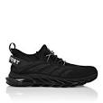
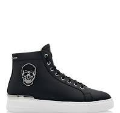
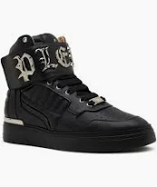
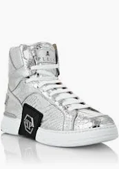

Üdvözöllek a Philipp Plein Cipők világában!
Fedezd fel a legújabb és legtrendibb cipőket, amelyek a luxus és a stílus megtestesítői.
| Kép | Modell | Anyag | Szín | Ár | Leírás |
|---|---|---|---|---|---|
|  | Plein Sport Runner | Bőr, Textil | Fekete | €500 | Egy elegáns sportcipő, amely kényelmet és stílust kínál mindennapi viseletre. |
|  | Skull Leather Sneakers | Bőr | Fehér | €700 | Luxus bőrcipő, jellegzetes koponya motívummal és kristályokkal díszítve. |
|  | High-Top Trainers | Bőr, Textil | Piros | €600 | Modern és merész dizájnú magas szárú cipő, amely garantáltan kitűnik a tömegből. |
|  | Crystal Embellished Sneakers | Bőr | Fekete | €800 | Elegáns cipő, amelyet kristályok díszítenek, a luxus és a kifinomultság jegyében. |